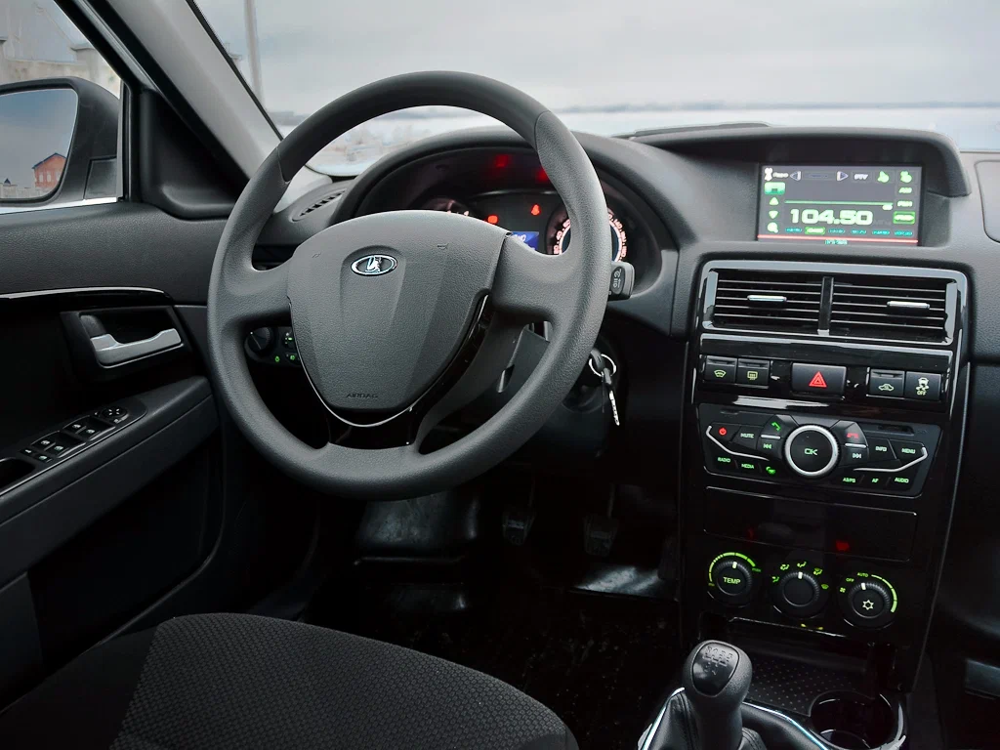

LADA Priora - семейство рестайлинговых российских автомобилей, ранее носивших названия «Lada 110», «Lada 111», «Lada 112», III группы малого класса, выпускавшихся ПАО «АвтоВАЗ» c 2007 по 2018 год. Головной моделью семейства является седан, носящий по отраслевой нормали индекс ВАЗ-2170.
В марте 2007 года с конвейера сошло чуть более тысячи седанов Priora, 21 апреля 2007 года начались продажи. Выпуск модели с кузовом хетчбэк начался в феврале 2008 года. Модификацию с кузовом универсал показали на автосалоне в Краснодаре в октябре 2008 года, а производство варианта с этим кузовом началось 27 мая 2009 года. Кроме этого, АвтоВАЗ выпускал малыми сериями модификацию «купе» (фирменное обозначение трёхдверного хетчбэка) и вело разработку кабриолета на его базе.
С начала 2009 года семейство Priora полностью вытеснило с конвейера семейство кузовов в первоначальном виде — LADA 110. На 16 мая 2012 года выпущено 650 000 машин. В 2011 году произошли небольшие изменения машины — заменён передний бампер, зеркала заднего вида и рулевое колесо. Добавились новые функции. Также в комплектации «стандарт» был установлен новый 8-клапанный двигатель с облегчённой шатунно-поршневой группой.
В сентябре 2013 года произошёл рестайлинг автомобиля. Благодаря изменениям повысилась комфортность, безопасность, освежился внешний вид. Модернизированы ходовые качества автомобиля. Головную оптику снабдили дневными ходовыми огнями, улучшена шумоизоляция, к опциям добавилась система курсовой устойчивости (ESC).
В сентябре 2014 года АвтоВАЗ начал производство версии LADA Priora AMT, оснащенной роботизированной коробкой передач. Это собственная разработка компании, созданная на основе стандартной пятиступенчатой коробки передач с использованием электроактуаторов и электронного блока управления фирмы ZF.
С 2015 года на все автомобили семейства LADA Priora ставится механическая 5-ступенчатая коробка передач ВАЗ-2181 c тросовым приводом переключения передач. Она имеет такую же раскладку переключения, как классические «Жигули»: задняя передача включается вправо и назад.
В декабре 2015 года завершилось производство хетчбэков и универсалов, вариантов с двигателем мощностью 98 л. с., а также машин с роботизированной коробкой передач. 21 апреля 2017 года с конвейера сошла миллионная Priora. 22 мая 2018 года объявлено, что LADA Priora будет снята с производства в июле 2018.
16 июля 2018 года в сети появилось фото последнего кузова LADA Priora в сварочном цехе автозавода, украшенного цветными воздушными шариками и покрытого плакатом с надписью «Последний!». Фото было сделано 13 июля около 14.00 (на плакате на фото указана другая дата — 11 июля). Модель ещё будут собирать, используя ранее сваренные кузова, включая последний, несколько дней.
Создан на базе седана ВАЗ-2110.
LADA Priora Premier (ВАЗ-21708) — удлинённая на 175 мм версия седана. Мелкосерийное производство велось партнёром АвтоВАЗа — тольяттинской компанией ЗАО «Супер-Авто» с ноября 2008 года. Оснащается 1,8-литровым двигателем ВАЗ-21128 мощностью 100 л. с. В 2008 году собрано 26 лимузинов, в 2009 году планировалось собрать 200 «премьеров».
LADA Priora CNG — битопливная версия седана. Она при езде использует не только бензин, но и сжатый природный газ (метан).
LADA Priora Sport — спортивная версия LADA Priora.
LADA Priora хетчбэк
Автомобиль представляет собой глубокую модернизацию ВАЗ-2112 с полностью изменённым дизайном кузова, включая заднюю часть с оригинальной светотехникой и кузовными панелями. Выпускался с осени 2008 года по 2015 год. Имел двигатели, объёмом 1,6 литра мощностью 81, 87, 98 и 106 л. с.
LADA Priora универсал
Создан на базе седана ВАЗ-2170. Серийное производство товарных автомобилей началось 27 мая 2009 года. До конца мая по плану произведено 250 новых универсалов, а продажи через дилерскую сеть начались с 20 июня 2009 года.
Автомобиль представляет собой глубокую модернизацию ВАЗ-2111 с полностью изменённым дизайном кузова, включая заднюю часть с оригинальными кузовными панелями и светотехникой. Задние боковые окна установлены без пластиковых накладок, изменилась их форма (расширяются к верху). Задние фонари с двери были перенесены на кузов, установлены с вертикальной компоновкой. На колесных арках багажника появились скобы для закрепления груза.
Впервые LADA Priora универсал была официально представлена в октябре 2008 года на Краснодарской выставке Mobi 2008, но фактически общероссийская презентация модели, завершающей семейство Priora, состоялась на Мотор-шоу Авто+Автомеханика в Санкт-Петербурге 29 октября 2008 года. В декабре 2008 года АвтоВАЗ изготовил первую пилотную партию универсалов LADA Priora. В январе 2009 года под массовый выпуск универсала было переналажено штамповое производство. Планируемый на 2009 год объём производства универсалов Priora — 20 тыс., причём по заявлениям представителей АвтоВАЗа, данная цифра может быть скорректирована в сторону увеличения в связи с подъёмом интереса к семейству LADA Priora. По замыслу вазовских маркетологов, универсал должен стать самой оснащённой моделью в своём семействе, поэтому продажи Priora универсал стартовали в самой оснащённой комплектации «люкс» по цене от 357 000 руб. Практически одновременно в продажу пошли модификации в базовой комплектации «норма» с АБС и климатической системой по цене 340 020 руб.
На экспортную версию автомобиля первоначально предполагалось устанавливать дизельный двигатель итальянского производства.
LADA Priora CoupeМелкосерийная модель АвтоВАЗа с 3-дверным кузовом на базе 5-дверной модели, предназначенная для замены аналогичной модели ВАЗ-21123 семейства LADA 110. Производство начато в 2010 году и завершилось в конце 2014 года.
Для автомобиля было разработано более 150 оригинальных деталей и узлов: задние крылья, детали каркаса кузова, передние двери, крыша, стёкла боковин и уплотнители стёкол, декоративные накладки кузова, диски колёс, обивки салона. Спинки передних кресел сделали складными, а их каркас был усилен. В остальном автомобиль не отличается от пятидверного хетчбэка в комплектации люкс.
Перед началом мелкосерийного производства автомобиль прошёл все государственные сертификационные испытания: измерения уровня наружного и внутреннего шума, оценку тормозов, устойчивости и управляемости, проверку прочности сидений и мест их креплений, оценку электромагнитной совместимости и ряд других тестов. Проведенные краш-тесты (фронтальный удар, наезд сзади, удар в бок и другое) показали: LADA Priora Coupe с запасом выполняет нормативы, действующие в России.
LADA Priora Coupe выпускалась на опытно-промышленном производстве АвтоВАЗа. Ранее здесь выпускался её предшественник — трёхдверный автомобиль на базе LADA 112. От этой модели LADA Priora Coupe отличается более комфортабельным салоном, более мощным мотором и более широким набором опций. В базовую комплектацию машины входят электростеклоподъёмники, кондиционер, датчик света, датчик дождя, парктроник, антиблокировочная система тормозов, подушки безопасности водителя и пассажира, передние ремни безопасности с механизмом предварительного натяжения и ограничения усилия, обогрев сидений, сигнализация с центральным замком и иммобилайзером.
В 2012 году LADA Priora Coupe получила модернизацию: помимо появившейся приставки «SPORT», её отличают бамперы в спортивном стиле и обивка сидений из кожзаменителя.
«Приора» представляет собой глубокий рестайлинг своей предшественницы — ВАЗ-2110. В конструкцию внесено свыше 950 принципиальных изменений и использовано более двух тысяч новых деталей (практически сколько и при создании полностью новой модели).
Экстерьер: передние и задние крылья, капот и крышка багажника, светотехника с противотуманными фарами, бамперы, облицовка радиатора, молдинги орнаменты и литые диски, наружные ручки дверей (с 2008 года).
При её разработке, безусловно, удалось ликвидировать наиболее грубые из ошибок дизайнеров, допущенных при создании «десятого» семейства. В частности, ушла в прошлое характерная для «десятки» совершенно нелепая для небольшого и ярко выраженно клиновидного седана чётко «отбитая» граница между крышей и остальным кузовом в районе задней стойки — переход этот теперь стал более плавным; стали достоянием истории многократно критиковавшиеся и не менее нелепые по своей форме задние арки колёс, заменённые более эстетичными; исчезла и бессмысленная для такого компактного и узкого автомобиля цельная полоса задних фонарей от борта до борта, заменённая на два фонаря, расположенных по бокам от крышки багажника и вытянутых в вертикальной плоскости, что визуально увеличивает ширину машины; были исправлены и иные, менее ярко выраженные ошибки пропорционирования отдельных элементов боковины, пластики и рисунка, что в целом и общем позволило в значительной степени отойти от несуразного образа «беременной антилопы», как немедленно окрестили в народе автомобиль предыдущей серии. Более современная светотехника и такие элементы, как встроенный в крышку багажника спойлер, также существенно «омолодили» облик автомобиля. По сравнению с предшествующей моделью, усовершенствованные технологии сборки узлов и механизмов позволили снизить зазоры между элементами кузова вдвое, а сопряжения бампер — крыло — фара (фонарь) теперь будто нарисованы. В целом, общий дизайн автомобиля восходит к облику «десятки», созданной в конце восьмидесятых годов в ключе тенденций популярного на тот момент течения «биодизайна».
Значительно усилена антикоррозийная защита, используется оцинковка, на любой тип кузова даётся 6-летняя гарантия от сквозной коррозии.
Интерьер: разработан с участием дизайнеров итальянской студии Carcerano, панель приборов с маршрутным компьютером, серебристая накладка консоли с часами овальной формы, подлокотник с двумя нишами для мелких предметов, более качественная обивка салона, мультиплексная система управления электроприводами в дверях, зеркал и актуаторов (в том числе и багажника), подушка безопасности водителя (во всех комплектациях), переднего пассажира (комплектация Люкс), уплотнители ветрового и заднего стёкол, шумоизоляция, энергопоглощающие вставки передних дверей (с 2009 года) и «торпедо», позволили подтянуть к современному уровню дизайн интерьера и повысили уровень оснащённости, комфорта и безопасности. Пространство салона осталось неизменным от предшествующей модели. Среди недостатков можно отметить небольшую длину салазок передних сидений, в результате чего рослый водитель (более 175—180 см), может чувствовать себя стеснённо, отсутствует полноценная регулировка сидения по высоте, рулевая колонка регулируется только по высоте.
Силовой агрегат: двигатель ВАЗ-21116 мощностью 87 л. с. (8 клапанов) или ВАЗ-21126 мощностью 98 л. с. (16 клапанов).
Двигатель ВАЗ-21126, практически выдаёт 102—107 л. с. (показания получены при неофициальных стендовых испытаниях). Двигатель ВАЗ-21126 значительно модернизирован относительно предыдущего 21124, причём основным путём его усовершенствования было внедрение компонентов иностранного производства вместо так и не достигших приемлемого уровня качества отечественных — в частности, применена значительно облегченная ШПГ зарубежного производства компании Federal Mogul, ремень ГРМ и натяжной ролик фирмы Gates, с заявленным ресурсом в 200 тысяч километров. Степень сжатия была увеличена до 11 с помощью установки более тонкой прокладки ГБЦ (из-за повышения степени сжатия по заводскому руководству требовалось использовать бензин с октановым числом не менее 95). Можно отметить и многие другие доработки и усовершенствования, а также усиленное сцепление, вакуумный усилитель тормозов увеличенного диаметра, механизм привода коробки передач с подшипниками закрытого типа. Установка бензиновых моторов 21128-26 и 21128-27 рабочими объёмами 1,8 литра мощностью 123 л. с. и 130 л. с. производится в качестве тюнинга тольяттинской фирмой «Супер-авто».
Ходовая часть: несмотря на модернизацию стоек передней подвески с бочкообразными пружинами, в целом, её схема с прямыми коваными рычагами и упирающимися в них диагональными реактивными тягами (именуемые растяжками) вместо современных L-образных рычагов на сегодняшний день представляется устаревшей; в задней подвеске применены новые амортизаторы; безредукторный электроусилитель руля (выпускаются и варианты с ГУР), более эффективная тормозная система с появившимися системами ABS и Система BAS (BOSCH 8.1). Устанавливается передний и задний стабилизатор поперечной устойчивости. Задние тормоза сохранены барабанными, — по заявлениям производителя их эффективности хватает.
Дополнительное оборудование: сигнализация с дистанционным управлением (моноключ), иммобилизатор, аудиоподготовка, в отдельных комплектациях штатная акустическая система.
В ряд комплектаций серийно устанавливается кондиционер с климат-контролем, подогрев лобового и заднего стекла, подогрев передних сидений, датчик света и дождя, парктроник, электростеклоподъёмники всех дверей.
В комплектации «Люкс» автомобиль оснащается подушкой безопасности водителя и пассажира. Кузов автомобиля усилен с целью повышения пассивной безопасности. Также возросла жесткость кузова на кручение, особенно во второй фазе кузова (начиная со второй половины 2008 года). С мая 2008 года автомобиль «Лада-Приора» выпускается в комплектации «Люкс», которая включает подушку безопасности переднего пассажира, преднатяжители передних ремней безопасности, АБС и систему безопасной парковки автомобиля.
В результате краш-теста, проведенного «Авторевю» по методике ARCAP, «Приора Фаза 1», выпускавшаяся до середины 2008 года, получила 5,7 баллов из 16 возможных за фронтальный удар и 9 за боковой, то есть может претендовать максимум на две звезды («Люкс» — на три), что по уровню сравнимо лишь с немногочисленными устаревшими моделями американского и корейского происхождения. В первой половине 2008 года, с целью повышения безопасности, была завершена модернизация кузова для всех модификаций автомобиля, которая получила название «Фаза 2». Краш-тест над «Приора Фаза 2», на данный момент проводился только специалистами АвтоВАЗа, с приглашением различных журналистов. По результатам этого краш-теста автомобиль набрал 10.56 баллов из 16 возможных за фронтальный удар, 13 баллов за боковой удар. Чтобы получить общую оценку в 4 звезды автомобилю нужно набрать в общей сумме 24 балла, Lada Priora набрала 23,56. Европейское агентство по безопасности в таких случаях пользуется обычным методом арифметического округления, то есть в итоге уровень пассивной безопасности Lada Priora соответствует 4 звёздам.
С самого начала производства LADA Priora соответствовала всем предъявляемым экологическим нормам: Евро-3 для российского рынка и Евро-5 для рынка ЕС. После ужесточения экологических норм на российском рынке автомобили с 2011 года имеют электронную педаль газа и полностью соответствуют нормам Евро-4.
Аудиосистема для LADA Priora — это головное устройство псевдо 2 DIN, интегрированное в панель приборов, 4 динамика, антенный кабель и внешняя высокочувствительная антенна. На двигателе автомобиля установлен помехоподавляющий конденсатор.
Радиоприёмник работает в AM/FM диапазонах, проигрыватель считывает данные с CD-диска, с USB-носителя и с мобильного телефона через Bluetooth-канал. Гнездо для USB расположено в перчаточном ящике (согласно требованиям ЕЭК ООН по пассивной безопасности). Интегрированный в радиоприёмник контроллер Bluetooth и микрофон позволяют водителю принимать/отклонять приходящие на мобильный телефон вызовы с помощью кнопок на панели радиоприёмника. При входящем звонке номер абонента отображается на дисплее. Таким образом, никаких дополнительных приспособлений и устройств для использования функции «Hands Free» не требуется.
После 30-летнего перерыва, начиная с 8 апреля 2010 года штатное радиооборудование предусмотрено в качестве дополнительной опции в комплектациях «норма» и «люкс».
Изначально планировалось устанавливать в качестве опции навигацию ГЛОНАСС в автомобилях Lada Priora ещё в середине 2009 года, но сроки были перенесены. 1 июня 2010 года генеральный директор ОАО «Российские космические системы» Юрий Урличич на Международном форуме по спутниковой навигации сообщил, что серийное производство автомобилей с приёмниками ГЛОНАСС/GPS начнется в первом квартале 2011 года. Первые автомобили Lada Priora с навигаторами ГЛОНАСС/GPS были показаны на Московском автосалоне в августе 2010 года.
С 28 октября 2013 года на конвейере АВТОВАЗа начата сборка а/м LADA Priora с системой предпускового подогрева двигателя с модулем подогрева и блоком управления немецкой фирмы Eberspecher (21703/21713/21723-044-31/-054-31). Всего за 10…15 минут система позволяет провести автоматически включаемый и отключаемый (программируемый на конкретное время, дни недели и длительность) предварительный прогрев двигателя до температуры в 60 градусов за счет прогрева охлаждающей жидкости в отдельной печке, работающей на бензине, далее провести легкий запуск двигателя и сразу начать движение даже в мороз до −40 градусов. Расход бензина при прогреве 300 гр/час (при прогреве двигателя за счет работающего двигателя расход может быть до 2,5 л/час, кроме того при холодном запуске страдает двигатель и экология). Недостатком а/м было отсутствие электроподогреваемого ветрового стекла. С февраля 2015 года в комплектацию с предпусковым подогревателем добавлено электрообогреваемое ветровое стекло и передние сиденья с электрообогревом (21703/21713/21723-054-32). C октября 2015 года эта комплектация не собирается.
|
Радиус поворота |
5,5 м |
|
Подвеска спереди |
типа «Мак-Ферсон» |
|
Подвеска сзади |
упругая поперечная балка |
|
Рулевое управление |
Реечное |
|
Тормоза передние |
Дисковые вентилируемые |
|
Тормоза задние |
Барабанные |
|
Шины |
185/60R14 |
На автомобиль устанавливаются бензиновые четырёхцилиндровые двигатели ВАЗ-21116 объёмом 1.6 л, с 8-клапанной и ВАЗ-21127 с 16-клапанной головками блока цилиндров это дальнейшие развитие ВАЗ-21126.
ВАЗ-21127 двигатель связан с применением более современной и совершенной системой впрыска топлива. Теперь под декоративным кожухом можно увидеть установленный ресивер, который регулирует подачу воздуха в зависимости от оборотов двигателя.
В отличие от двигателя ВАЗ-21124 и ВАЗ-21114 который устанавливался на автомобиль ВАЗ-2112 и ВАЗ-2110, новые двигатели имеют облегчённую шатунно-поршневую группу. Заявленная мощность повышена на 10,5 %, а ресурс на 50000 км.
Заявленные максимальная скорость составляет 183 километров в час, а время разгона до 100 км/ч — 11,5 секунды.
В 2009 и 2012 году LADA Priora стала самой продаваемой моделью автомобиля на российском рынке.
С 2013 года продажи постепенно начали падать, в связи с общим моральным устареванием модели. Резкое падение спроса на Priora наступило после выхода на рынок моделей Lada нового поколения: Vesta и XRay. 16 июля 2018 года с конвейера сошла последняя Lada Priora.
|
Год |
Продажи |
|
2007 |
58 000 |
|
2008 |
128 600 |
|
2009 |
99 473 |
|
2010 |
125 235 |
|
2011 |
138 697 |
|
2012 |
125 951 |
|
2013 |
67 687 |
|
2014 |
47 817 |
|
2015 |
28 507 |
|
2016 |
17 553 |
|
2017 |
15 002 |
|
2018 |
8 268 |
|
2019 |
476 |
|
2020 |
42 |
26 мая 2015 года с конвейера сошла 900-тысячная Priora, а 21 апреля 2017 года — ровно через десять лет после начала серийного производства — был выпущен миллионный автомобиль.
Ранний вариант:
Поздний вариант:

Типы кузовов: седан, универсал, 5-дверный хетчбэк, 3-дверный хетчбэк